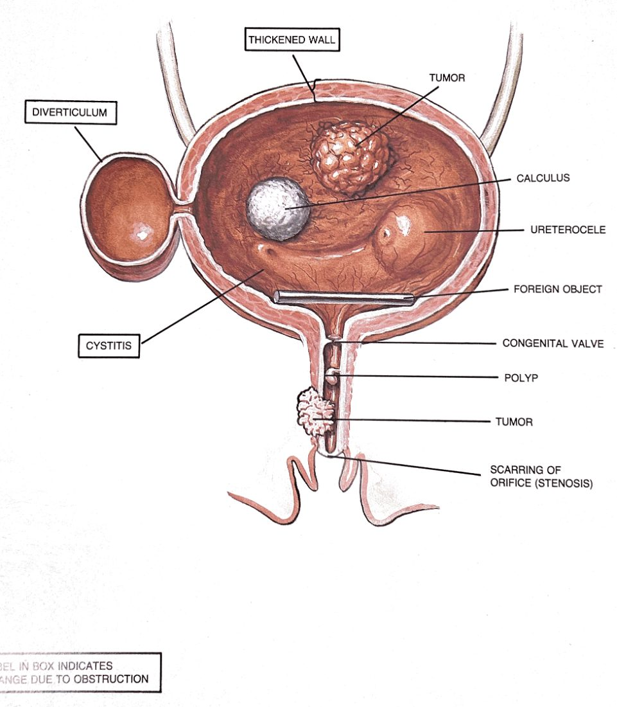

Clinic Follow-Up Patterns
The four most common urology clinic returns and how to make each visit useful. PSA in context, bladder cancer surveillance, the kidney mass that the radiologist found, and recurrent UTI in women and in men. Plus the clinic note that makes the next visit possible. For PAs, medical students, and clinical clerks.
Why Clinic Notes Are Different From Inpatient Notes
On the wards, you write to communicate with the next shift. In clinic, you write to communicate with yourself in six months, who has seen 300 patients between this visit and the next and will not remember a single thing about this one. The clinic note's job is to make the next visit competent without you being there to explain.
Every urology clinic note answers four questions: What conduit station are we monitoring? What did we find or do last time? What's the surveillance interval and what test comes next? What would cause us to escalate? Notes that answer those four are useful. Notes that don't are decorative.
1 — PSA in Context
What PSA actually measures
A serum glycoprotein produced almost exclusively by prostatic epithelial cells. The total PSA reflects the volume of prostatic tissue plus any disruption of the gland's architecture that lets PSA leak into the circulation faster than usual. It is not a cancer-specific test. It is a prostate-disruption test. BPH raises it. Inflammation raises it. Recent ejaculation raises it. DRE raises it. Cancer raises it.
How to interpret a single PSA
| Context | What changes |
|---|---|
| Patient on 5α-reductase inhibitor (finasteride, dutasteride) | Double the PSA for interpretation. 6 months of treatment cuts PSA ~50%. Always document the multiplier in the note. |
| Recent acute urinary retention | PSA artificially elevated for days–weeks. Recheck after recovery. |
| Recent prostate biopsy or instrumentation | Recheck in 4–6 weeks; up to 50× elevation is possible acutely. |
| Active UTI / prostatitis | Treat the infection first; recheck in 6 weeks. |
| After radical prostatectomy | Should be undetectable (<0.1 ng/mL). Anything detectable is concerning. |
| After radiation therapy | Nadir varies; failure defined as nadir + 2.0 (Phoenix criteria). |
When PSA trend matters more than the single value
PSA velocity (rate of rise) and PSA density (PSA / prostate volume) refine risk. A man with a PSA of 6 in a 100 g prostate is different from a man with a PSA of 6 in a 30 g prostate. The first has a density of 0.06 (low concern), the second 0.20 (significant concern).
What to actually do with the number
- PSA elevated, first finding → repeat in 6–12 weeks after addressing reversible causes (UTI, retention, recent instrumentation). Confirm before acting.
- Persistent elevation → multiparametric prostate MRI (replaces or precedes biopsy in most current pathways). PI-RADS 3 lesions are equivocal; 4–5 are biopsy targets.
- MRI suspicious, or clinical concern despite normal MRI → MRI-targeted ± systematic prostate biopsy.
- PSA rising on active surveillance for low-risk cancer → trigger repeat MRI ± biopsy.
- PSA rising after definitive treatment → biochemical recurrence; oncology pathway, restaging imaging (PSMA PET is the modern tool).
What the clinic note must contain
- Today's PSA, with date.
- Previous PSA values (last 3 minimum) with dates — trend is the point.
- Whether the patient is on a 5-ARI (and the corrected value if so).
- Prostate volume (DRE estimate or imaging) for PSA density.
- Any reversible cause to address before next check.
- The plan: recheck interval, next test, what would trigger biopsy.
2 — Bladder Cancer Surveillance

From Burroughs Wellcome Co., Atlas of the Urinary Tract.
The framing
Urothelial cancer is a field-effect disease — the entire urothelium has been exposed to the same insult (typically tobacco) and any one cell can transform. Resect a tumor and another may grow in the next year, or the next decade. Surveillance is the treatment plan, not an optional follow-up.
Risk stratification drives the schedule
| Risk group | What it looks like |
|---|---|
| Low risk | Solitary, primary, Ta low-grade, <3 cm. |
| Intermediate risk | Recurrent, multifocal, or >3 cm Ta low-grade. |
| High risk | Any high-grade, T1, CIS, BCG-failure, variant histology. |
Standard surveillance cystoscopy schedule (NMIBC)
What the clinic note must contain
- Risk group, stated explicitly.
- Date and findings of the most recent cystoscopy. ("No recurrence" is not enough; describe what was looked at: trigone, lateral walls, dome, neck, scope to verumontanum.)
- Cytology result, dated.
- Last upper-tract imaging (CT urogram or renal US per protocol).
- Intravesical therapy status — BCG induction or maintenance schedule, with cycle numbers.
- Next scope and next imaging dates, explicit.
- Smoking status. Always. (Smoking cessation reduces recurrence; this is treatment, not lifestyle advice.)
- New visible tumor on surveillance → re-TURBT.
- Positive cytology with negative cystoscopy → look upstream. Upper-tract urothelial carcinoma. CT urogram + ureteroscopy.
- High-grade recurrence after BCG → consider radical cystectomy. Conversation, not delay.
3 — The Incidental Kidney Mass
The scenario
A man gets a CT for diverticulitis. Report mentions a 2.3 cm solid enhancing lesion at the lower pole of the left kidney. He has no urinary symptoms. He has been referred to your clinic. He is terrified. The visit's job is to (a) confirm the finding, (b) characterize the lesion, (c) lay out the options, (d) document the conversation.
The characterization questions
| Question | Why it matters |
|---|---|
| Does it enhance with contrast? | Enhancement (>15–20 HU change) defines a solid mass. Non-enhancing = cyst. |
| Is it fat-containing? | Macroscopic fat on CT (<–10 HU) is angiomyolipoma — benign. Don't operate. |
| Is it cystic? Bosniak category? | Bosniak I–II: benign, observe. IIF: surveillance. III–IV: surgical, malignancy risk significant. |
| How big? | <4 cm = T1a, partial nephrectomy or active surveillance. 4–7 cm = T1b, partial if feasible. >7 cm = T2, often radical. |
| Where is it? | Polar lesions are easier to resect than central or hilar lesions. Exophytic vs. endophytic. Nephrometry score quantifies this. |
The three branches of the algorithm
- Partial nephrectomy — small enhancing solid mass, otherwise healthy patient. Curative if confined.
- Active surveillance — small (<3 cm), older patient, significant comorbidity, slow growth on serial imaging. Many small renal masses are indolent. Repeat imaging at 3, 6, 12 months then yearly.
- Ablation (cryoablation, RFA) — small, peripheral, poor surgical candidate. Lower-quality oncologic data than partial nephrectomy but reasonable for selected patients.
Biopsy when?
Renal mass biopsy used to be reserved for unusual cases (suspected metastatic deposit, lymphoma, abscess). Modern practice biopsies more often — especially before ablation, before observing a mass, or when imaging is indeterminate. A benign biopsy result (oncocytoma, AML) can avoid an unnecessary nephrectomy. Bleeding and seeding risks are real but small.
What the clinic note must contain
- Mass description: size, location, density, enhancement, Bosniak (if cystic), growth rate (if serial imaging).
- Renal function (eGFR), single vs. two kidneys.
- Patient comorbidities and surgical fitness.
- Options discussed (surgery / surveillance / ablation), shared decision-making documented.
- Next imaging or treatment date, explicit.
4 — Recurrent UTI
Recurrent UTI = ≥2 episodes in 6 months, or ≥3 in 12 months. The clinic visit splits into two completely different conversations depending on the patient's sex.
Recurrent UTI in women
In a structurally normal female urinary tract, recurrence is the rule rather than the exception. The mechanism is colonization of the vaginal vestibule and periurethral area by uropathogens that migrate up a short urethra. Anatomy is rarely the problem; behavior, biology, and bacterial reservoirs are.
Workup
- Urine culture every episode for one cycle of recurrences — confirm it's actually UTI, identify the organism, check resistance pattern.
- Post-void residual in office — rule out retention as a substrate.
- Imaging only if atypical: stone history, hematuria, atypical organism (Proteus suggests stone), pyelonephritis episodes.
- Cystoscopy for atypical features or persistent unexplained recurrence.
Management
- Modifiable behaviors — voiding after intercourse, hydration, wiping direction, avoiding spermicide. Evidence is mixed; counseling is cheap.
- Vaginal estrogen in postmenopausal women — single most effective intervention. Restores vaginal pH and lactobacillus dominance. Topical, low systemic absorption, safe in most.
- Cranberry, D-mannose, probiotics — modest or unclear evidence; reasonable to try.
- Antibiotic strategies — patient-initiated short course (give the prescription, let her start at first symptoms after sending culture); post-coital prophylaxis; daily low-dose prophylaxis (last resort — resistance and microbiome cost).
Recurrent UTI in men

From Burroughs Wellcome Co., Atlas of the Urinary Tract.
A man with recurrent UTI has anatomy. Period. The long male urethra and the prostatic barrier make UTI uncommon, so when it recurs, find the enabler. That is the entire workup.
Workup
- Urine culture — confirm, identify, treat the episode.
- Post-void residual — retention is a common substrate (BPH).
- Renal/bladder ultrasound or CT urogram — stones, hydronephrosis, bladder diverticulum, masses.
- Cystoscopy — diverticula, bladder stones, foreign bodies (forgotten stent), bladder cancer, strictures.
- DRE and PSA — chronic prostatitis vs. cancer in the differential.
- Expressed prostatic secretions / Meares-Stamey four-glass test in selected cases of suspected chronic bacterial prostatitis.
Management
- Treat the enabling lesion. Stone → remove. BPH with retention → manage outlet. Diverticulum with stagnant urine → consider resection. The infection is the symptom; the anatomy is the disease.
- Chronic bacterial prostatitis — needs prolonged courses (4–6 weeks) of lipid-soluble antibiotics that penetrate prostatic tissue (fluoroquinolone, TMP-SMX). Cure rate is honest with patients: variable.
- Prophylactic antibiotics are a last resort and rarely curative in men because they don't fix anatomy.
A 60-year-old woman with three UTIs a year is common and usually has none of the dangerous anatomy. A 60-year-old man with three UTIs a year almost certainly has something obstructing or harboring bacteria. Different sex, same diagnosis, completely different workup.
The Clinic Note Template
One template, useful for almost every urology visit. The headers are stations of the conduit plus surveillance variables. The note's purpose is to make the next visit possible without reconstruction.
A man being followed for low-risk prostate cancer (station 5) may also have chronic kidney disease (station 1), a known bladder diverticulum (station 3), and stress urinary incontinence (station 4). The single-diagnosis note misses three problems. The station-by-station note is auditable — anyone reading it knows what's being watched at each level of the conduit and what comes next.
One More Discipline — The Surveillance Calendar
Urology generates more surveillance schedules per patient than most specialties. The patient cannot remember them. The chart often won't enforce them. Build a visible calendar inside every chart.
- Diagnosis being surveilled, with date of diagnosis.
- Risk category (low / intermediate / high) where applicable.
- Scheduled test #1, date, status.
- Scheduled test #2, date, status.
- Trigger criteria for unscheduled visits.
- End-of-surveillance condition (e.g. "after 5 years cystoscopy-negative, transition to PCP-led monitoring").
This is not paperwork. It is the part of the disease management plan that survives between visits — and the part that prevents the forgotten stent, the missed surveillance cystoscopy that lets a high-grade recurrence become muscle-invasive, the post-prostatectomy patient whose PSA started rising in month 18 and nobody saw because nobody scheduled the draw.
May 24, 2026 — for PAs, medical students, and clinical clerks
the clinic note's job is to make the next visit possible · station by station · with the calendar attached
← back to reference